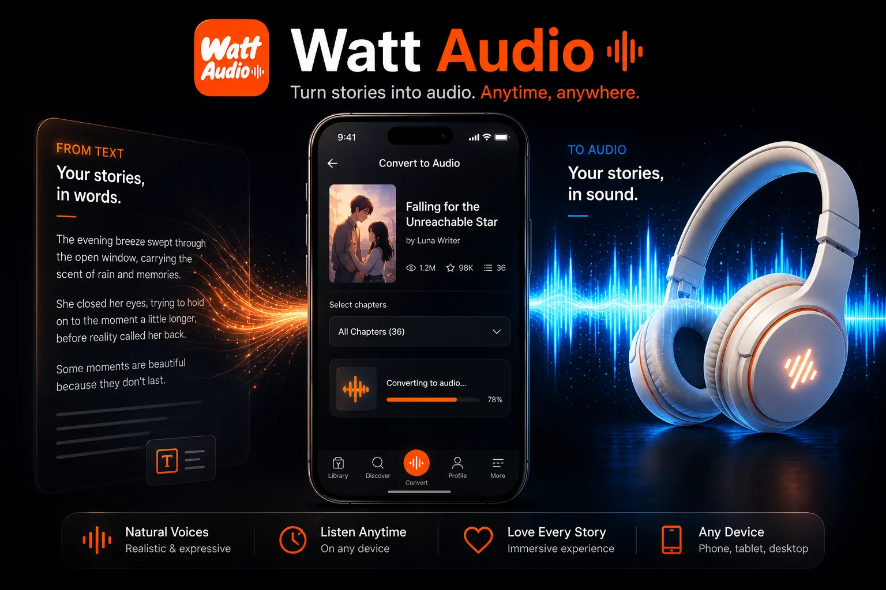

Listen to Fantasy Stories Online
How to listen to fantasy stories online, manage long chapters, and use Watt Audio for web fiction and Wattpad fantasy. This guide is written for fantasy readers dealing with long chapters, large casts, invented names, and world-building-heavy updates.
If you are searching for listening to fantasy stories online, you probably want something more comfortable than staring at a screen for every chapter. Web fiction is easy to discover but not always easy to read in daily life. Chapters arrive at odd times, stories can become very long, and the best reading moments often happen when your hands or eyes are already busy.
Watt Audio is designed around that exact problem. Instead of treating a story page like a normal web article, it helps you bring a supported story link into a listening library, create chapter audio, and continue the story with controls that feel closer to an audiobook player. The goal is not to replace the original story source or the author. The goal is to make personal reading more flexible when you want to listen.
Why readers use audio for web stories
Reading on a phone is convenient, but it can also become tiring. Bright screens, small text, long scrolling sessions, and constant notifications can make even a favorite story feel harder to finish. Audio gives you another mode. You can continue a chapter during getting through quests, magic systems, lore chapters, and battle scenes while commuting or doing chores, then return to normal reading whenever you want full visual focus.
The best audio workflow is chapter-based. A generic text reader may speak everything on a web page, including navigation, comments, buttons, and unrelated page elements. A story-focused app should keep attention on the chapter, remember where you are, and give you a clear way to move forward without rebuilding your queue every time.

Step-by-step setup
The simplest way to start is to treat the first chapter as a test. Do not worry about converting an entire library on day one. Add one story, generate one chapter, and check whether the voice, speed, and controls fit the way you like to read.
- Pick a fantasy story with chapters you want to continue and copy its link from the story page.
- Add the story to Watt Audio so the chapter list stays together instead of scattered across browser tabs.
- Generate one chapter first and check how the AI voice handles names, locations, spells, and dialogue.
- Use speed controls carefully. Dense lore chapters may need slower playback, while travel scenes may be comfortable faster.
- Keep listening progress by chapter so you can pause during a battle or reveal without losing your place.
Once this first flow feels natural, you can use it for longer sessions. Some readers prepare a few chapters before a commute. Others generate only the newest update from a favorite story. The most useful habit is to keep audio preparation close to your real routine, not to create a huge queue that you never finish.
How to get better listening results
Text to speech works best when you give yourself permission to adjust the experience. Fiction is not one uniform format. A quiet romance confession, a fantasy battle, a recap chapter, and a casual author's note all have different rhythms. The same playback speed will not always feel right.
- Fantasy is easier to follow when you listen in chapter order and avoid jumping between unrelated arcs.
- If a story has a glossary or recap chapter, listen to it before returning after a long break.
- For invented names, context matters more than perfect pronunciation; the brain adjusts after a few minutes.
If you care about immersion, listen for a few minutes before deciding whether a chapter is a good fit for audio. Some chapters are perfect for hands-free listening because they are linear and dialogue-driven. Others include lists, unusual formatting, or heavy world-building that may be easier to read visually. A flexible reader uses both modes.
When Watt Audio is most useful
Watt Audio is most helpful when the story is already part of your routine. If you follow many serialized stories, you know how easy it is to fall behind. Audio turns small gaps in the day into reading time: a walk, a bus ride, a cleaning session, or a quiet moment before sleep. Those small sessions add up quickly.
It is also useful for rereads. When you already know the plot, listening can bring back the atmosphere without requiring the same level of visual attention. You can revisit favorite chapters, catch up before a new update, or move through slower sections while saving your focused reading energy for the scenes you care about most.
Frequently asked questions
Can AI read fantasy names correctly?
Sometimes yes, sometimes no. The important part is consistent, clear listening that keeps the plot moving.
Is fantasy too complex for audio?
Not if you use chapter-level listening and pause when the story introduces important rules or locations.
What speed is best?
Start at normal speed, then adjust. Fantasy usually benefits from a slightly slower pace than light comedy or familiar rereads.
Download Watt Audio
Turn supported story links into chapter audio, listen with the screen off, adjust playback speed, and keep your reading habit moving when life is busy.
Download on the App Store